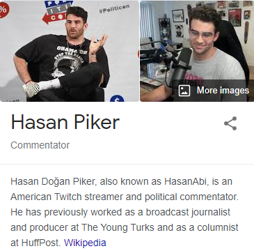
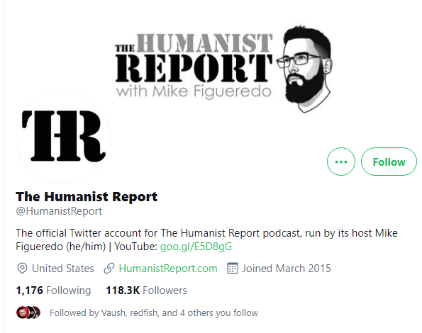
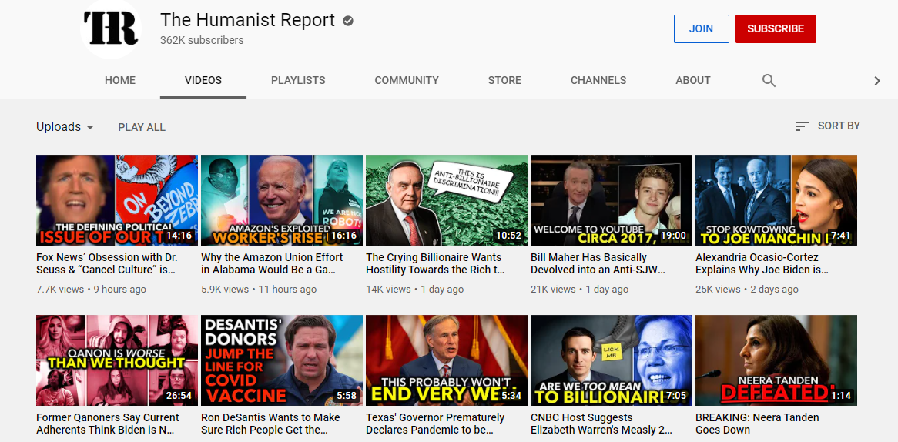
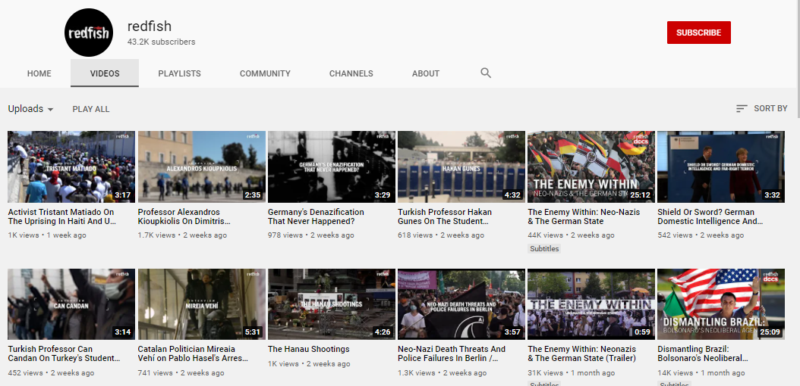
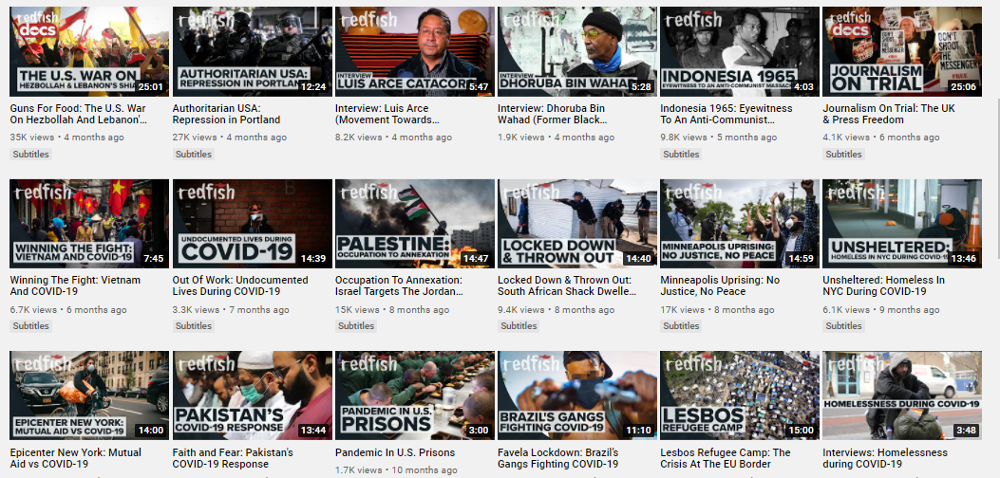
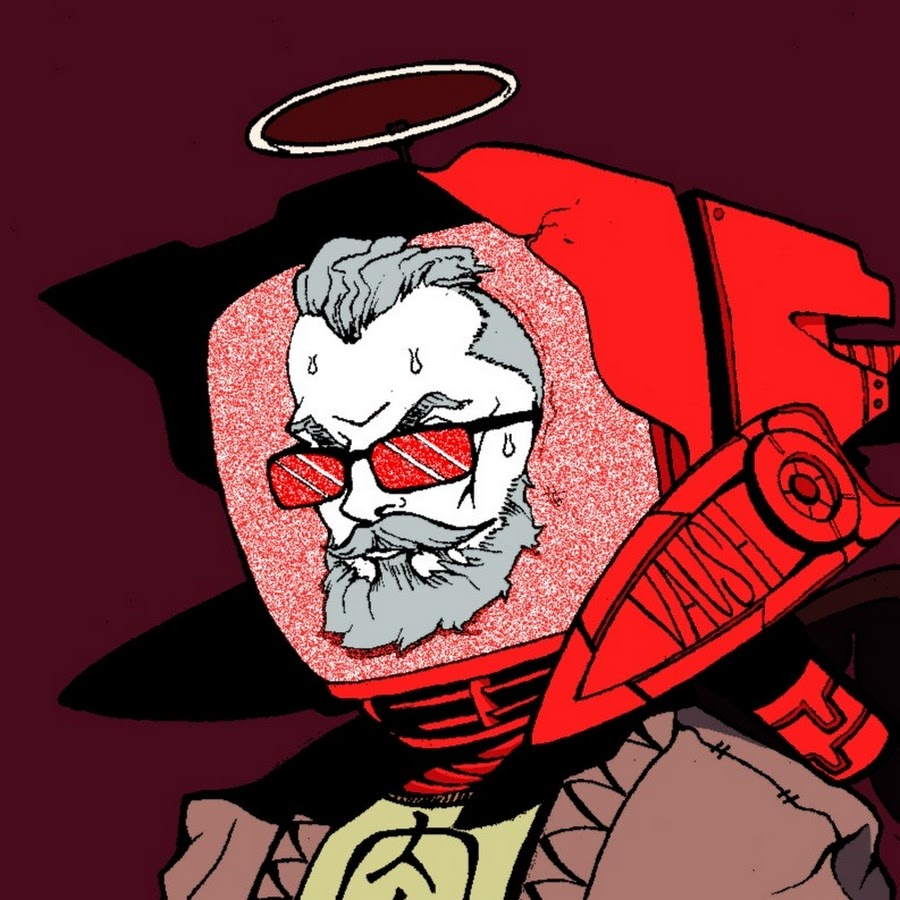
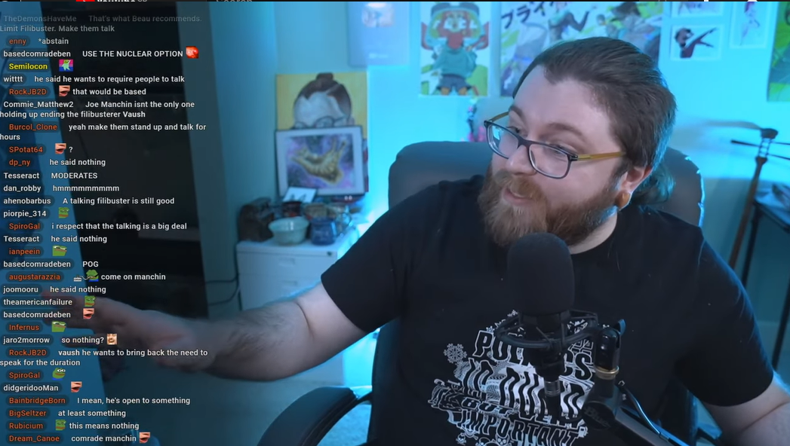

Recommended Content Creators
Hasan Piker/Hasanabi
Hasan Doğan Piker, also known as HasanAbi, is an American Twitch streamer and political commentator. Piker has been identified as a progressive, leftist and socialist. He has advocated in favor of workplace democracy, Medicare for All, the Green New Deal, intersectional feminism, gay and transgender rights, and gun control; he has advocated against war and Islamophobia.
Piker has cited his upbringing in Turkey under the Premiership of Recep Tayyip Erdoğan as an influence on both his left-wing views and willingness to speak out about them. Piker supported the presidential primary campaigns of Bernie Sanders in 2016 and 2020, and has been an outspoken critic of both the Democratic and Republican parties.
He can be found Live on Twitch everyday:
Twitch: HasanabiYouTube: Hasanabi
Twitter: @Hasanthehun
Here's a Fanmade Channel that frequently uploads uncut/unedited bits of Hasan's 12h livestreams:
YouTube: Daily Dose of HasanAbiRecommended Video:
All Gas No Brakes
All Gas No Brakes is a web series produced by Seattle-based journalist Andrew Callaghan in August 2019. The series, released on YouTube and Instagram, features Callaghan interviewing members of fringe subcultures or at people attending events like Burning Man, furry conventions and Flat Earth Conference. All Gas No Brakes creates compeletely unbaised content. For educational purposes and for entertainment purposes.
Recommended video on understanding All Gas No Brakes by Vice:
Popular video recommendation:
YouTube: All Gas No Brakes
The Humanist Report/Mike Figueredo
 The Humanist Report (THR) is a progressive political podcast that discusses and analyzes current news events and pressing political issues. Their analyses are guided by humanism and political progressivism. Each news story they cover is supplemented with thought-provoking, fact-based commentary that aims for the highest level of objectivity.
Recommended videos:
YouTube: The Humanist Report
Twitter: @Humanist Report
redfish
 redfish created a platform for people to share their own stories and to bring awareness to a bigger picture that connects us all. They produce content in two main formats: 25 minute in-depth documentaries and faster paced “On the Ground” stories from hotspots around the world. Additionally, they're 100% editorially independent and have their content accessible to 1200+ clients across 89 countries.
redfish Principles:
"You can rely on us to be consistent. We are not driven by chasing clicks or trends — we are journalists who strive to be objective about where things stand. But we don’t claim to be neutral: our team has a proven track record of both supporting and covering struggles which challenge the exploitative global system that enslaves humankind and is destroying our planet. We are in favour of people taking charge of their own destinies, against military and economic wars for profit and against racism. We believe in equality for all – regardless of gender, sexuality, range of abilities, age and religion. These are the principles that have set us on a journey to tell and investigate stories that challenge mainstream narratives."
Introduction video:
YouTube: redfish
Official Website: redfish
Twitter: redfishstream
Vaush
 Vaush is an American left-wing YouTuber known for his advocacy for libertarian market socialism and debates with other youtubers, most notably Sargon Of Akkad and Destiny. Vaush holds left-wing views and identifies as a libertarian market socialist. However, he has said he doesn't care for the label that is put onto him and identifies more like a leftist in general. In spite of this, he despises authoritarian leftism, in fact having heavily fought against people espousing political positions similar to that of Mao Zedong and Joseph Stalin in the past, who he refers to as Tankies.
Recent recommended videos
...
...